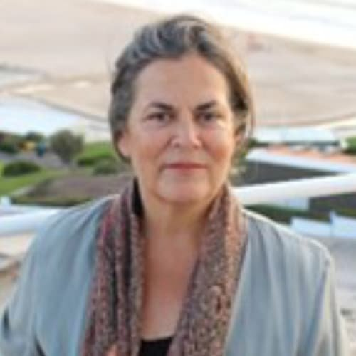

Australia member
Susana Neto
Name: Susana Neto Highest qualification and awarding university Designation Adjunct Professor Employer University of Western Australia Contact details: Email: WhatsApp number/Mobile number susana.neto@netcabo.pt +351 91 477 2906 Home page link on your employer web site if avai…
Published 30 June 2022 · Updated 7 April 2025

| Name: | Susana Neto |
| Highest qualification and awarding university | |
| Designation | Adjunct Professor |
| Employer | University of Western Australia |
Contact details:
|
|
| susana.neto@netcabo.pt | |
| +351 91 477 2906 | |
| Home page link on your employer web site if available | https://research-repository.uwa.edu.au/en/persons/susana-neto |
| Key areas of interest | Water policy and governance, Territorial integration of water management, Water and food security, Sustainable urban development, Water learning and education |
| Web links for your research profile on Google scholar; ORCID or ResearchGate (if available); only one of them please. | ORCID – http://orcid.org/0000-0001-5231-8633 |
Susana Neto worked in research and policy for integrated water management and territorial planning for the last 35 years, holding a degree in Civil Engineering (1982), a MSc in Urban and Regional Planning (1987), and a PhD in Water and Territorial Planning (2010). She has published and presented around 200 titles in water governance, and territorial planning.
Susana is Adjunct Professor at the University of Western Australia since 2012, and researcher in the Centre of Civil Engineering Research and Innovation for Sustainability (CERIS), in Portugal. She is a member of the Water Governance Initiative Group (WGI) in OECD, since 2016. She is Editor-in-Chief of the Journal World Water Policy (Wiley) since 2013.
She has codesigned, structured, and delivered more than 20 new courses for 300 participants from 70 different countries in Universities in Europe and Australia, applying innovative co-learning methodologies for IWRM and water governance.
Research Project
- (2022-2021) Participation in the Training program ‘Water Matters for India – Young Water Professional Training’ sponsored by AWP and Australia -India cooperation, within the UWA IoA team.
- (2020 – 2013) Co-designer and co-coordinator of the Module “Water, Food Security and Agricultural Landscapes” for the International Master Course in Integrated Water Management, delivered at the UWA, with International Water Centre (IWC), Australia
- (2014 – 2013) Co-designer and leader of the Monitoring and Evaluation of the Australian Aid APAS Irrigation and WRM course on Irrigation and Water Resource Management delivered at UWA, in southwest Western Australia and in the Murray Darling Basin (September 2013 to April 2014), with Australian Aid Agency (AusAID).
Key Publications/Reports
- “Territorial Integration and Innovation for Good Urban Water Governance”. 2022. Neto, S. Book Chapter accepted for publication in the Routledge Handbook on Urban Water Governance (in press).
- “Open science for accelerating sustainable development goals: status and prospects in Asia and the Pacific”. 2022. Camkin, J, Neto, S., Bhattarai, B., Ojha, H., Khan, S. Sugiura, A., Lin, J., Nurritasari, F. 2021. (Accepted for publication by Frontiers in Political Science. Special Issue: “Advancing UNESCO Member States’ National Development Goals on Open Science, SETI and SDGs in Asia and the Pacific”).
- Transparency, regional diversity, and capacity building: cornerstones for trust and engagement in good water governance. 2022. Neto, S., Camkin, J. Water International, 2022, 47(2), pp. 238–256
- The role of the water framework directive in the controversial transition of water policy paradigms in Spain and Portugal. 2021. Martínez-Fernández, J., Neto, S., Hernández-Mora, N., del Moral, L., Roca, F.L.Water Alternativesthis 2021, 13(3), pp. 556–581.
- What rights and whose responsibilities in water? Revisiting the purpose and reassessing the value of water services tariffs. 2020. Neto, S., Camkin, J. Utilities Policy, 2020, 63, 101016.
- “OECD principles on water governance in practice: an assessment of existing frameworks in Europe, Asia-Pacific, Africa and South America”. 2017. Neto, S., Camkin, J. Fenemor, A., Poh-Ling Tan, Melo Baptista, J., Ribeiro, M., Schulze, R., Stuart-Hill, S., Chris Spray, C. and Elfithri, R. Water International, vol. 43, Pages 1-30.